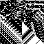
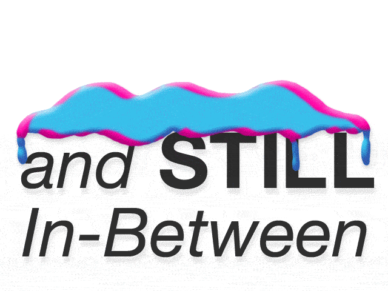
Use W,A,S,D, or Arrow keys to move)
Plastic Yet Still In-Between
pavilion curated by
Andrew Benson
for
the Wrong Biennale
IAN CHENG
[400,400] "bbrraattss" 2013
DAVID OREILLY
[-400,800] "RGBXYZ" 2007
REED+RADER
[800,1400] "Brave New World" 2013
ALEX MCLEOD
[1600,400] "Where We Started" 2013
SUZY POLING
[800,-600] "GLASS TEARS" - "Die and Come Alive" 2013
JACOB CIOCCI
[0,-800] "Take Me" 2012
KATIE TORN
[-600,-400] "The Calm Before the Storm","Monument","Sleeping Beauty","Still Life With Clock","Snow White","Aunt Lizzie" 2012
SEAN BOWIE (TEAMS)
[-1200,400] "OVOXO (Trust Edit)" 2013
JOEY RYKEN
[-1600,1600] "BULLROARER'S RED HERRING PARAPHRAND" 2013
ALEJANDRO CRAWFORD
[-600,1800] "Innernet" 2011
DANIEL SWAN
[-1000,-1200] "Sample Core" 2013
ALLEN CORDELL
[0,1600] "Cocaine Werewolf 2013" 2013
DAVID LEWANDOWSKI
[-1300,-350] "Late For The Meeting" 2013
JÓNÓ MÍ LÓ
[900,-1200] 2013
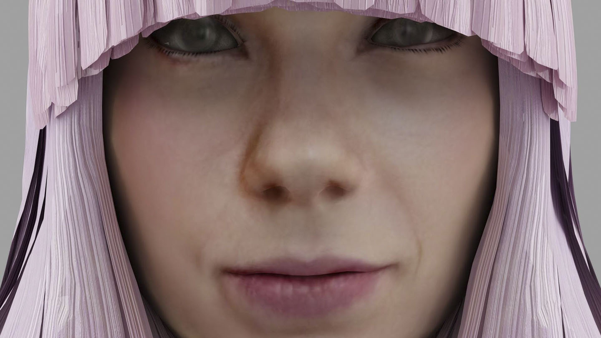 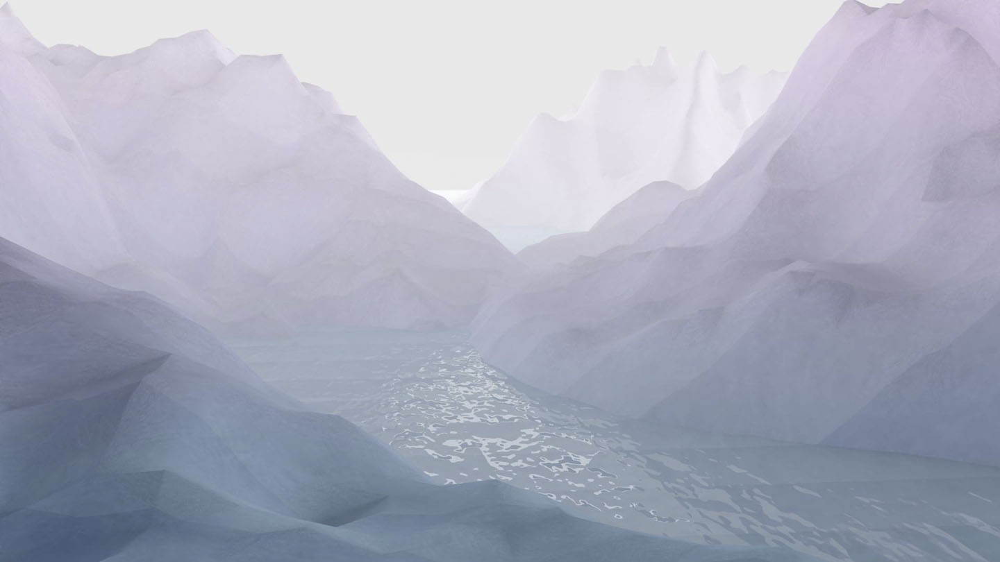 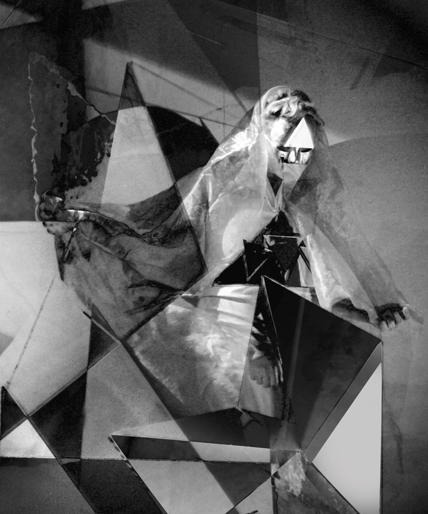 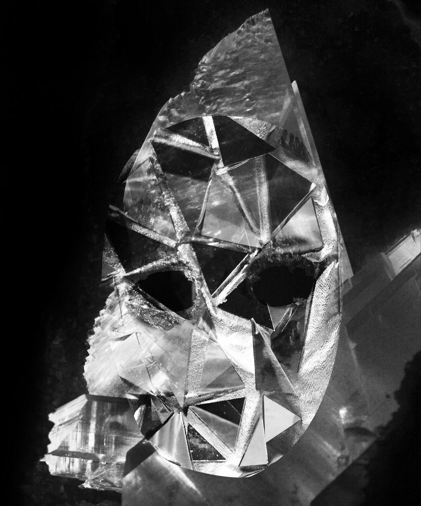 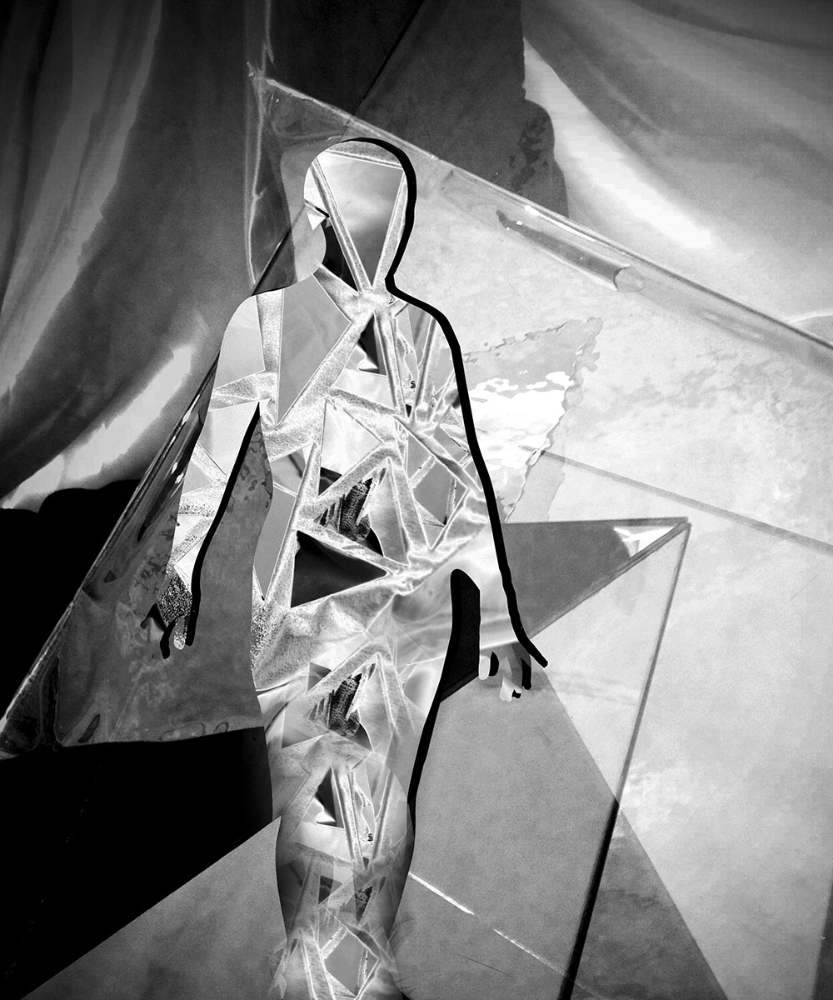 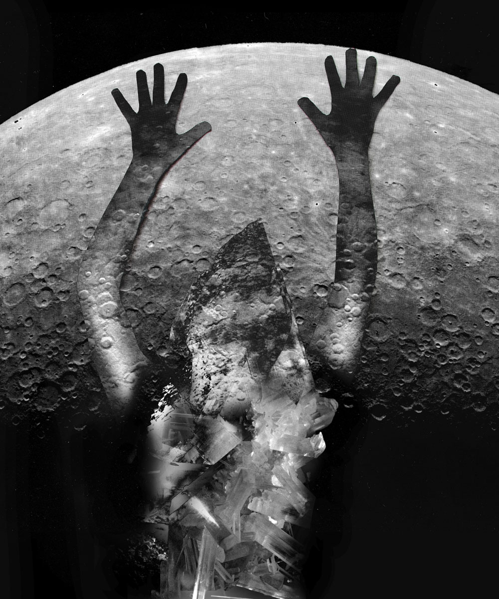 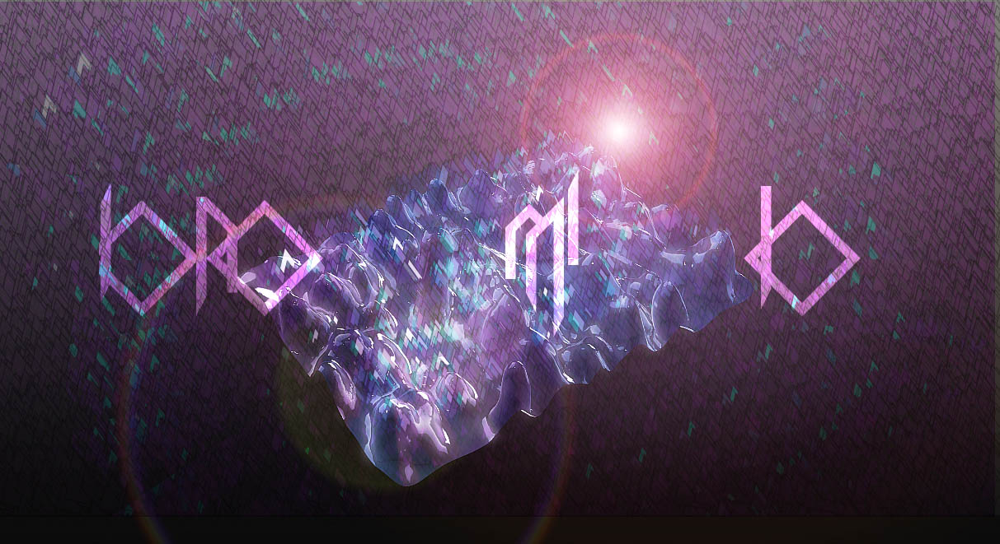 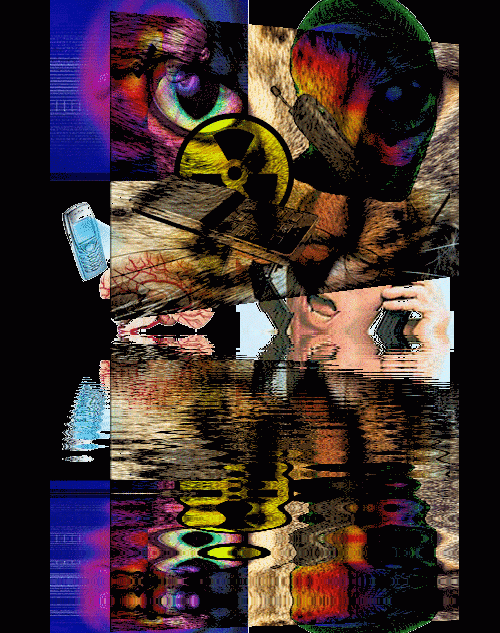 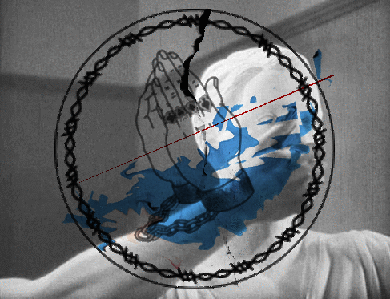